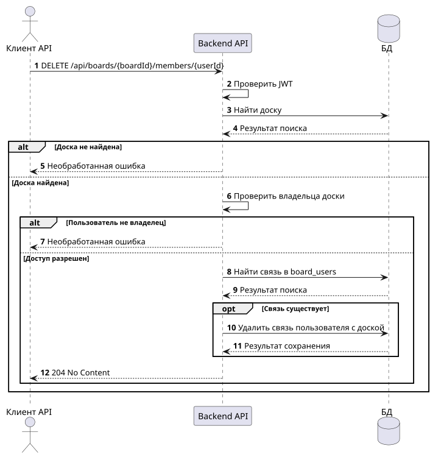

Удаляет пользователя из участников доски.
Доступ: JWT. Удаление участников разрешено только владельцу доски.
Схема работы


@startuml
autonumber
actor "Клиент API" as FE
participant "Backend API" as API
database "БД" as DB
FE -> API : DELETE /api/boards/{boardId}/members/{userId}
API -> API : Проверить JWT
API -> DB : Найти доску
DB --> API : Результат поиска
alt Доска не найдена
API --> FE : Необработанная ошибка
else Доска найдена
API -> API : Проверить владельца доски
alt Пользователь не владелец
API --> FE : Необработанная ошибка
else Доступ разрешен
API -> DB : Найти связь в board_users
DB --> API : Результат поиска
opt Связь существует
API -> DB : Удалить связь пользователя с доской
DB --> API : Результат сохранения
end
API --> FE : 204 No Content
end
end
@endumlАлгоритм
Проверить JWT и найти доску по идентификатору
boardId.Сравнить владельца доски с текущим пользователем. Если идентификаторы не совпадают, отказать в удалении участника.
Найти пользователя с идентификатором
userIdсреди участников доски.Если связь существует, удалить ее из
board_usersи сохранить изменения.Вернуть
204без тела ответа. Отсутствие связи не считается ошибкой.
Входные параметры
Параметры пути (PATH). Тело запроса и QUERY-параметры отсутствуют.
Где | Поле | Тип | Обязательно | Описание |
|---|---|---|---|---|
PATH |
| integer | Да | Идентификатор доски |
PATH |
| integer | Да | Идентификатор удаляемого участника |
Ответ
204 No Content: пользователь удален из участников доски или соответствующая связь отсутствовала. Тело ответа отсутствует.
Ошибки
Если доска не найдена или текущий пользователь не является ее владельцем, возникает исключение. Контроллер не преобразует такие ошибки в ответы 404 или 403, поэтому возможна необработанная ошибка сервера.
Пример запроса
DELETE /api/boards/101/members/10
При успешном выполнении сервер возвращает 204 No Content без JSON.